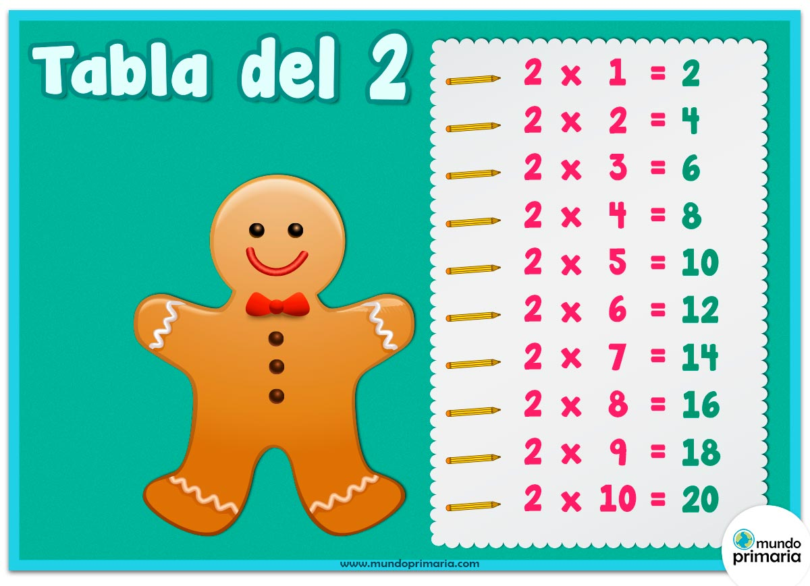
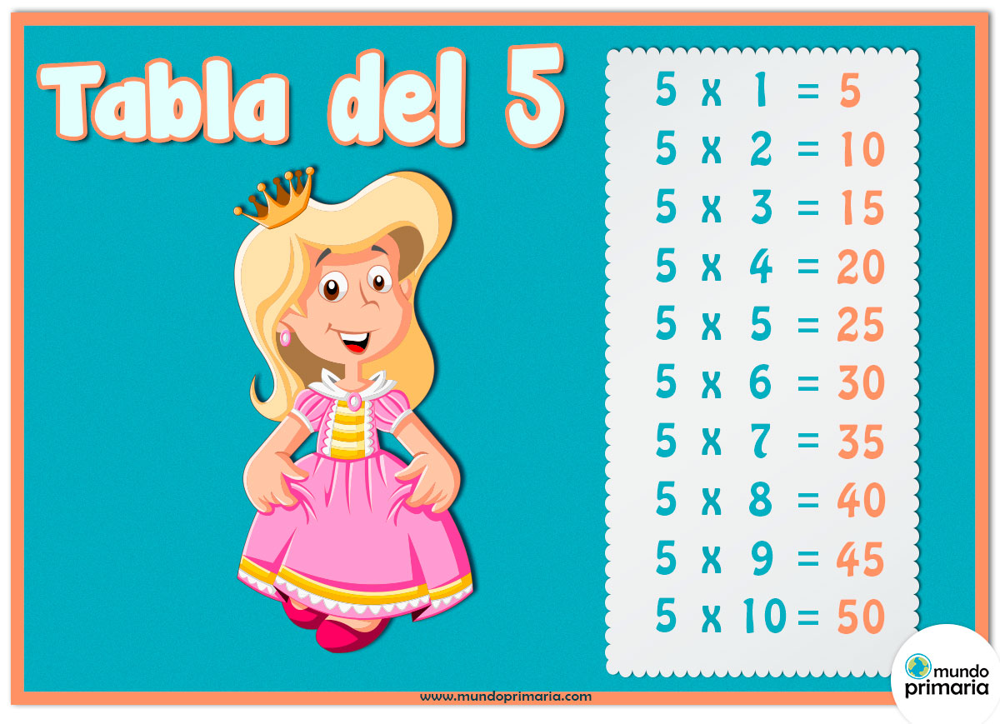
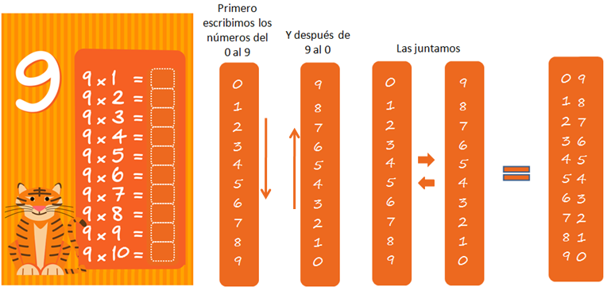

A la hora de realizar las multiplicaciones, en ciertos casos hay trucos o ayudas que se pueden llevar a cabo para facilitar el aprendizaje de estas,
Algunos de estos casos serian:
- La tabla del numero 2, se caracteriza por ser todos los numeros pares. Es decir, todo numero par hasta el 20 (2 X 10 = 20) fa a ser parte de esta tabla, de la siguiente manera: 
- La tabla del numero 5, se caracteriza por la facilidad para aprenderla ya que a diferencia de los demas numeros, todo numero multiplicado por 5 va a terminar en 5 o 0. Es decir, de la siguiente manera: 
- La tabla del numero 9, se caracteriza porque hay un metodo muy simple para saber como es la tabla. Este metodo se basa en sumar un numero a la decena cada vez y al mismo tiempo restarle un numero a la unidad, de la siguiente forma: 